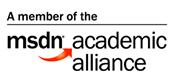
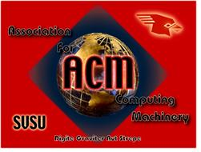

Menu
Click for weather forecast
About
Do I really need to worry about the department itself? Absolutely! No matter where you go to school, your major is determined by the faculty that comprise that particular department. These professors are the individuals whom you will spend a lot of time with in classes, laboratories and in completing homework assignments and projects. They help to shape your future and take great interest in their students. You’ll find SVSU’s Department of Computer Science & Information Systems is staffed by qualified, competent professionals who are committed to teaching and research. We are here to help you grow and succeed in your academic and professional career. Our class sizes are small compared to other institutions and you’ll get to know and work with the CSIS faculty one-on-one. This helps to foster a learning environment aimed at student success. Here are some of the reasons why SVSU’s CSIS Department is superior to other institutions:
- Quality Instruction
- Capstone Projects
- Computer Laboratories
- Use of the Latest Software
- Tutoring/Advising
- Free Student Access to Software
- Preparation for Graduate School
- Networking with Industry
- Student Networking
Faculty have the necessary education and experience to bring real world knowledge into their classrooms. SVSU prides itself on being a teaching institution and the Department continually strives to provide the best instruction on campus. Our programs and our curriculum are continually evaluated and change as the computing field and industry evolve. We put a lot of effort into trying to keep our programs as up-to-date as possible and bring in new technology wherever we can.
How would you like to work on a real-world project while still an undergraduate? That’s exactly what the capstone projects in each major do. When you are a senior you’ll find out what it’s really like to be in industry because you’ll be building up a large scale system under the guidance of a CSIS faculty member. Few other institutions afford their students this unique learning opportunity.
You’ll find that the university provides numerous computer labs throughout the campus that are automatically updated with the newest equipment every two to three years. Additionally, the CSIS Department has specialized labs for computer networking, computer forensics and capstone classes/projects. Furthermore most faculty use the online VSpace electronic learning environment to enrich your education.
The Department provides hands-on instruction using the latest and most popular software packages available, including both open source and commercial systems such as Visual Studio, PHP, C++, Linux, Windows, IIS, Apache, Microsoft Project, Visio, mySQL, Oracle, SQL Server, Expression Studio and DreamWeaver
Need some extra help? We have tutors available to help students out when they need it. The caring faculty of the Department also maintain regular office hours and are ready to assist whenever called upon. We also work with students in planning their schedules through one-on-one advising as well as offering career information.
The CSIS Department uses open source software where applicable and students may freely download the same software for their personal computers. The Department also participates in the Microsoft Academic Alliance which means that students have free access to the same applications, development tools, operating systems and server software for their personal computers as that used in classes and labs.
We have had many students interesting in going on to grad school. Those students who did pursue higher education found that they were well prepared from their undergrad studies. Many faculty provide opportunities for students to participate in research projects and/or independent studies that allow students to further pursue their personal interests. Students receive shared credit for the research and often present at conferences.
The Department maintains close ties to local industry. This means that CSIS students have the ability to land internships, co-op positions and part-time employment in their field while still an undergraduate. In addition to a paycheck, the experience this opportunity provides goes a long way toward landing that first job after graduation. Many employers also contact the Department directly when they are looking to hire new recruits for full time positions.
Want more face-to-face time with your peers? The Department has an active student chapter of the Association for Computing Machinery (ACM). This group puts on numerous talks, training sessions and gaming nights each year as well as hosting the annual high school programming contest. The ACM is a professional society and becoming active as a student looks great on your resume. You may even consider sharpening your leadership skills by becoming a board member of the chapter.
